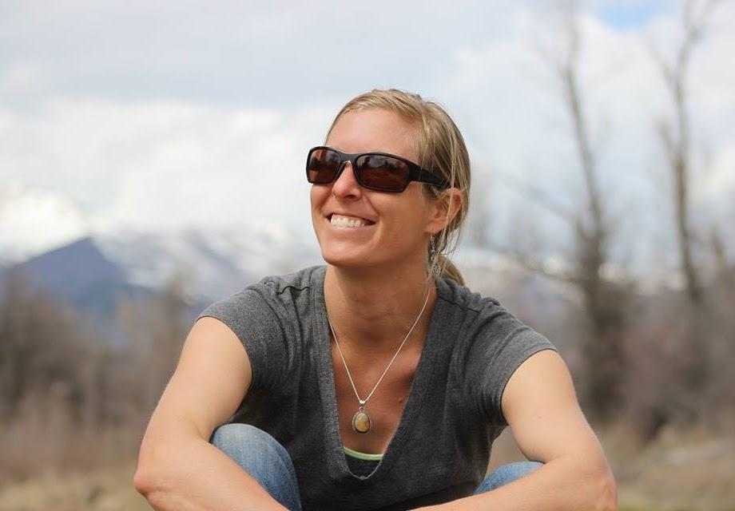

Nomad Mapping is an independent GIS consulting practice based in the Columbia River Gorge. With more than 20 years of GIS experience, we work across the ArcGIS ecosystem—from database design and ArcGIS Pro to ArcGIS Online, field applications, spatial analysis, and cartography.
We enjoy solving complicated GIS problems, making useful maps, and finding simpler ways to get things done. Whether you need a long-term GIS partner or an extra set of experienced hands for a specific project, we're happy to jump in where you need us.
Depending on your project's scope, scale, or timeline, we work alongside a trusted network of experienced GIS professionals. This allows us to scale up seamlessly and provide deep specialized expertise whenever complex data models, large-scale field efforts, or advanced web GIS applications require it.